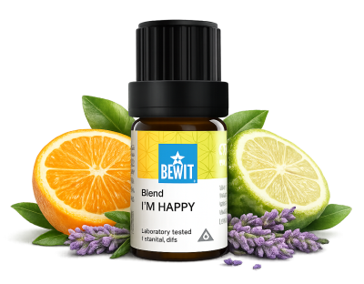

Radost není luxus — je to přirozený stav, ke kterému se lze vracet. Esence mohou být jemným impulzem, který pomáhá znovu najít lehkost a vnitřní pohodu, i v těžších dnech. Výsledky přicházejí s pravidelností — dopřejte si čas.

pro lehkost a vnitřní pohodu
Když se cítíte smutní, přetížení nebo jste ztratili radost ze dne. Ukáži vám, jak přirozeně podpořit dobrou náladu a znovu najít vnitřní lehkost.

Harmonizační směs pro obnovu vnitřní radosti a lehkosti.
Uvolňuje hněv, napětí a frustraci a pomáhá znovu vidět krásu běžných věcí.
💧 Jak použít: přidej 3–5 kapek do difuzéru nebo zředěný v nosném oleji (např. jojobový) nanes na zápěstí a solar plexus.
Zjistit více →💧 Jak použít: přidej 3–5 kapek do difuzéru nebo zředěný v nosném oleji nanes na zápěstí — nechte vůni unést náladu výš.
Chci radost💧 Jak použít: přidej 3–5 kapek do difuzéru nebo zředěný v nosném oleji nanes na zápěstí a hrudník.
Chci podporu💧 Jak použít: přidej 3–5 kapek do difuzéru nebo zředěný v nosném oleji nanes na zápěstí — svěží citrusová vůně rozjasní mysl.
Chci lehkostRadost není luxus — je to přirozený stav, ke kterému se lze vracet. Esence mohou být jemným impulzem, který pomáhá znovu najít lehkost a vnitřní pohodu, i v těžších dnech. Výsledky přicházejí s pravidelností — dopřejte si čas.
🌿 Všechny esence, které na tomto webu doporučuji, jsou od BEWIT. Jako registrovaný zákazník můžete nakupovat se slevou až 50 % na vybrané produkty.
Registrace u BEWIT zdarma →Esenciální oleje nejsou náhradou lékařské péče.